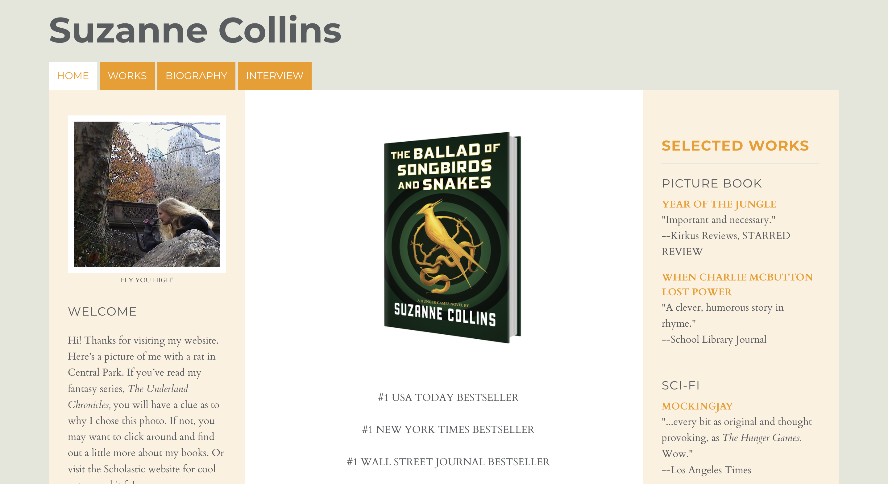

The Process
I selected this website because it's a simplistic website but I believe it almost plays into that element a bit too much.
I think there's a lot of content that's simply just dumped on the pages without much thought given to best ensure users see that information in a manner that works best for them.
Important information is essentially not positioned in a manner that's best suited to ensuring a user sees it.
Key things I chose to redesign
| Problem | Fix |
|---|---|
| Large blocks of texts | Implemented a scrolling slideshow that showcases each book's reviews and awards |
| Low contrast | Updated the font and font color |
| Menu doesn't stand out | Repositioned the menu buttons |
| Bland aesthetic | Repositioned the heading and introduced a more pleasing and cohesive theme |
Below are the initial and the redesign webpages:


For more insight into the design process, Please visit this site